EDA#
# EDA_Jarvis.py
import numpy as np
import pandas as pd
import matplotlib.pyplot as plt
import seaborn as sns
import string
import re
import nltk
from tqdm import trange
from nltk import tokenize
from nltk.corpus import stopwords
from nltk.stem import WordNetLemmatizer
from nltk.probability import FreqDist
from collections import Counter
from sklearn.feature_extraction.text import CountVectorizer
import warnings
warnings.filterwarnings('ignore')
nltk.download('omw-1.4', quiet=True)
sns.set_style('darkgrid')
plt.rcParams['figure.figsize'] = (17,7)
plt.rcParams['font.size'] = 18
nltk.download('punkt')
nltk.download('punkt_tab')
[nltk_data] Downloading package punkt to
[nltk_data] C:\Users\adria\AppData\Roaming\nltk_data...
[nltk_data] Package punkt is already up-to-date!
[nltk_data] Downloading package punkt_tab to
[nltk_data] C:\Users\adria\AppData\Roaming\nltk_data...
[nltk_data] Package punkt_tab is already up-to-date!
True
data=pd.read_csv('Resume.csv')
def word_count(review):
review_list = review.split()
return len(review_list)
data['Word_count'] = data['Resume_str'].apply(word_count)
data['Length'] = data['Resume_str'].str.len()
data['mean_word_length'] = data['Resume_str'].map(lambda rev: np.mean([len(word) for word in rev.split()]))
data.head(10)
| ID | Resume_str | Resume_html | Category | Word_count | Length | mean_word_length | |
|---|---|---|---|---|---|---|---|
| 0 | 16852973 | HR ADMINISTRATOR/MARKETING ASSOCIATE\... | <div class="fontsize fontface vmargins hmargin... | HR | 674 | 5442 | 6.459941 |
| 1 | 22323967 | HR SPECIALIST, US HR OPERATIONS ... | <div class="fontsize fontface vmargins hmargin... | HR | 708 | 5572 | 6.307910 |
| 2 | 33176873 | HR DIRECTOR Summary Over 2... | <div class="fontsize fontface vmargins hmargin... | HR | 1017 | 7720 | 6.218289 |
| 3 | 27018550 | HR SPECIALIST Summary Dedica... | <div class="fontsize fontface vmargins hmargin... | HR | 379 | 2855 | 5.997361 |
| 4 | 17812897 | HR MANAGER Skill Highlights ... | <div class="fontsize fontface vmargins hmargin... | HR | 1206 | 9172 | 6.368159 |
| 5 | 11592605 | HR GENERALIST Summary Dedic... | <div class="fontsize fontface vmargins hmargin... | HR | 666 | 5480 | 6.735736 |
| 6 | 25824789 | HR MANAGER Summary HUMAN RES... | <div class="fontsize fontface vmargins hmargin... | HR | 637 | 5250 | 6.872841 |
| 7 | 15375009 | HR MANAGER Professional Summa... | <div class="fontsize fontface vmargins hmargin... | HR | 1106 | 9033 | 6.813743 |
| 8 | 11847784 | HR SPECIALIST Summary Posses... | <div class="fontsize fontface vmargins hmargin... | HR | 796 | 6720 | 6.988693 |
| 9 | 32896934 | HR CLERK Summary Translates ... | <div class="fontsize fontface vmargins hmargin... | HR | 716 | 5978 | 6.825419 |
resume_html_value = data.iloc[0]['Resume_html']
print(resume_html_value)
<div class="fontsize fontface vmargins hmargins linespacing pagesize" id="document"> <div class="section firstsection" id="SECTION_NAME500375979" style="
padding-top:0px;
"> <div class="paragraph PARAGRAPH_NAME firstparagraph" id="PARAGRAPH_500375979_1_326506904" style="
padding-top:0px;
"> <div class="name" itemprop="name"> <span class="field fName" id="500375979FNAM1"> </span> <span> </span> <span class="field" id="500375979LNAM1"> HR ADMINISTRATOR/MARKETING ASSOCIATE
HR ADMINISTRATOR</span> </div> </div> </div> <div class="section" id="SECTION_SUMM500375981" style="
padding-top:0px;
"> <div class="heading bottomborder"> <div class="sectiontitle" id="SECTNAME_SUMM500375981"> Summary</div> </div> <div class="paragraph firstparagraph" id="PARAGRAPH_500375981_1_326506917" style="
padding-top:0px;
"> <div class="field singlecolumn" id="500375981FRFM1"> <p align="LEFT"> Dedicated Customer Service Manager with 15+ years of experience in Hospitality and Customer Service Management. </p> <p align="LEFT"> Respected builder and leader of customer-focused teams; strives to instill a shared, enthusiastic commitment to customer service. </p> </div> </div> </div> <div class="section" id="SECTION_HILT500375982" style="
padding-top:0px;
"> <div class="heading bottomborder"> <div class="sectiontitle" id="SECTNAME_HILT500375982"> Highlights</div> </div> <div class="paragraph firstparagraph" id="PARAGRAPH_500375982_1_326509244" style="
padding-top:0px;
"> <div class="singlecolumn maincolumn"> <table class="twocol"> <tbody> <tr> <td class="field twocol_1" id="500375982SKC11"> <p align="CENTER"> Focused on customer satisfaction</p> <p align="CENTER"> Team management</p> <p align="CENTER"> Marketing savvy</p> <p align="CENTER"> Conflict resolution techniques</p> <br/> </td> <td class="field twocol_2" id="500375982SKC21"> <p align="CENTER"> Training and development</p> <p align="CENTER"> Skilled multi-tasker</p> <p align="CENTER"> Client relations specialist</p> </td> </tr> </tbody> </table> </div> </div> </div> <div class="section" id="SECTION_ACCM500375993" style="
padding-top:0px;
"> <div class="heading bottomborder"> <div class="sectiontitle" id="SECTNAME_ACCM500375993"> Accomplishments</div> </div> <div class="paragraph firstparagraph" id="PARAGRAPH_500375993_1_326506914" style="
padding-top:0px;
"> <div class="field singlecolumn" id="500375993FRFM1"> <ul> <li> Missouri DOT Supervisor Training Certification</li> <li> Certified by IHG in Customer Loyalty and Marketing by Segment </li> <li> Hilton Worldwide General Manager Training Certification</li> <li> Accomplished Trainer for cross server hospitality systems such as <b> <u> Hilton OnQ</u> </b> , <u> Micros </u> <b> <u> Opera PMS</u> </b> <u> , Fidelio </u> <b> <u> OPERA</u> </b> <u> Reservation System (ORS)</u> , <b> <u> Holidex</u> </b> </li> <li> Completed courses and seminars in customer service, sales strategies, inventory control, loss prevention, safety, time management, leadership and performance assessment.</li> </ul> </div> </div> </div> <div class="section" id="SECTION_EXPR500375983" style="
padding-top:0px;
"> <div class="heading bottomborder"> <div class="sectiontitle" id="SECTNAME_EXPR500375983"> Experience</div> </div> <div class="paragraph firstparagraph" id="PARAGRAPH_500375983_1_326506906" itemscope="" itemtype="https://schema.org/Organization" style="
padding-top:0px;
"> <div class="singlecolumn"> <span class="paddedline"> <span class="jobtitle" id="500375983JTIT1"> HR Administrator/Marketing Associate
HR Administrator</span> <span> </span> <span class="datesWrapper"> <span class="jobdates" format="%b %Y" id="500375983JSTD1"> Dec 2013</span> <span> to </span> <span class="jobdates" format="%b %Y" id="500375983EDDT1"> Current</span> <br/> </span> </span> <span class="paddedline" itemscope="" itemtype="https://schema.org/postalAddress"> <span class="companyname" id="500375983COMP1" itemprop="name"> Company Name</span> <span> － </span> <span class="joblocation jobcity" id="500375983JCIT1" itemprop="addressLocality"> City</span> <span> , </span> <span class="joblocation jobstate" id="500375983JSTA1" itemprop="addressRegion"> State</span> </span> <span class="jobline" id="500375983JDES1" itemprop="description"> <ul> <li> Helps to develop policies, directs and coordinates activities such as employment, compensation, labor relations, benefits, training, and employee services.</li> <li> Prepares employee separation notices and related documentation</li> <li> Keeps records of benefits plans participation such as insurance and pension plan, personnel transactions such as hires, promotions, transfers, performance reviews, and terminations, and employee statistics for government reporting.</li> <li> Advises management in appropriate resolution of employee relations issues.</li> <li> Administers benefits programs such as life, health, dental, insurance, pension plans, vacation, sick leave, leave of absence, and employee assistance.</li> </ul> <br/> <p align="LEFT"> <b> Marketing Associate</b> </p> <ul> <li> Designed and created marketing collateral for sales meetings, trade shows and company executives.</li> <li> Managed the in-house advertising program consisting of print and media collateral pieces.</li> <li> Assisted in the complete design and launch of the company's website in 2 months.</li> <li> Created an official company page on Facebook to facilitate interaction with customers.</li> <li> Analyzed ratings and programming features of competitors to evaluate the effectiveness of marketing strategies.</li> </ul> </span> </div> </div> <div class="paragraph" id="PARAGRAPH_500375983_2_326506907" itemscope="" itemtype="https://schema.org/Organization" style="
padding-top:10px;
"> <div class="singlecolumn"> <span class="paddedline"> <span class="jobtitle" id="500375983JTIT2"> Advanced Medical Claims Analyst</span> <span> </span> <span class="datesWrapper"> <span class="jobdates" format="%b %Y" id="500375983JSTD2"> Mar 2012</span> <span> to </span> <span class="jobdates" format="%b %Y" id="500375983EDDT2"> Dec 2013</span> <br/> </span> </span> <span class="paddedline" itemscope="" itemtype="https://schema.org/postalAddress"> <span class="companyname" id="500375983COMP2" itemprop="name"> Company Name</span> <span> － </span> <span class="joblocation jobcity" id="500375983JCIT2" itemprop="addressLocality"> City</span> <span> , </span> <span class="joblocation jobstate" id="500375983JSTA2" itemprop="addressRegion"> State</span> </span> <span class="jobline" id="500375983JDES2" itemprop="description"> <ul> <li> Reviewed medical bills for the accuracy of the treatments, tests, and hospital stays prior to sanctioning the claims.</li> <li> Trained to interpret the codes (ICD-9, CPT) and terminology commonly used in medical billing to fully understand the paperwork that is submitted by healthcare providers.</li> <li> Required to have organizational and analytical skills as well as computer skills, knowledge of medical terminology and procedures, statistics, billing standards, data analysis and laws regarding medical billing.</li> </ul> </span> </div> </div> <div class="paragraph" id="PARAGRAPH_500375983_3_326506908" itemscope="" itemtype="https://schema.org/Organization" style="
padding-top:15px;
"> <div class="singlecolumn"> <span class="paddedline"> <span class="jobtitle" id="500375983JTIT3"> Assistant General Manager</span> <span> </span> <span class="datesWrapper"> <span class="jobdates" format="%b %Y" id="500375983JSTD3"> Jun 2010</span> <span> to </span> <span class="jobdates" format="%b %Y" id="500375983EDDT3"> Dec 2010</span> <br/> </span> </span> <span class="paddedline" itemscope="" itemtype="https://schema.org/postalAddress"> <span class="companyname" id="500375983COMP3" itemprop="name"> Company Name</span> <span> － </span> <span class="joblocation jobcity" id="500375983JCIT3" itemprop="addressLocality"> City</span> <span> , </span> <span class="joblocation jobstate" id="500375983JSTA3" itemprop="addressRegion"> State</span> </span> <span class="jobline" id="500375983JDES3" itemprop="description"> <ul> <li> Performed duties including but not limited to, budgeting and financial management, accounting, human resources, payroll and purchasing.</li> <li> Established and maintained close working relationships with all departments of the hotel to ensure maximum operation, productivity, morale and guest service.</li> <li> Handled daily operations and reported directly to the corporate office.</li> <li> Hired and trained staff on overall objectives and goals with an emphasis on high customer service.</li> <li> Marketing and Advertising, working on public relations with the media, government and local businesses and Chamber of Commerce.</li> </ul> </span> </div> </div> <div class="paragraph" id="PARAGRAPH_500375983_4_326506910" itemscope="" itemtype="https://schema.org/Organization" style="
padding-top:5px;
"> <div class="singlecolumn"> <span class="paddedline"> <span class="jobtitle" id="500375983JTIT4"> Executive Support / Marketing Assistant</span> <span> </span> <span class="datesWrapper"> <span class="jobdates" format="%b %Y" id="500375983JSTD4"> Jul 2007</span> <span> to </span> <span class="jobdates" format="%b %Y" id="500375983EDDT4"> Jun 2010</span> <br/> </span> </span> <span class="paddedline" itemscope="" itemtype="https://schema.org/postalAddress"> <span class="companyname" id="500375983COMP4" itemprop="name"> Company Name</span> <span> － </span> <span class="joblocation jobcity" id="500375983JCIT4" itemprop="addressLocality"> City</span> <span> , </span> <span class="joblocation jobstate" id="500375983JSTA4" itemprop="addressRegion"> State</span> </span> <span class="jobline" id="500375983JDES4" itemprop="description"> <ul> <li> Provided assistance to various department heads - Executive, Marketing, Customer Service, Human Resources.</li> <li> Managed front-end operations to ensure friendly and efficient transactions.</li> <li> Ensured the swift resolution of customer issues to preserve customer loyalty while complying with company policies.</li> <li> Exemplified the second-to-none customer service delivery in all interactions with customers and potential clients.</li> </ul> </span> </div> </div> <div class="paragraph" id="PARAGRAPH_500375983_5_326506911" itemscope="" itemtype="https://schema.org/Organization" style="
padding-top:10px;
"> <div class="singlecolumn"> <span class="paddedline"> <span class="jobtitle" id="500375983JTIT5"> Reservation & Front Office Manager</span> <span> </span> <span class="datesWrapper"> <span class="jobdates" format="%b %Y" id="500375983JSTD5"> Jun 2004</span> <span> to </span> <span class="jobdates" format="%b %Y" id="500375983EDDT5"> Jul 2007</span> <br/> </span> </span> <span class="paddedline" itemscope="" itemtype="https://schema.org/postalAddress"> <span class="companyname" id="500375983COMP5" itemprop="name"> Company Name</span> <span> － </span> <span class="joblocation jobcity" id="500375983JCIT5" itemprop="addressLocality"> City</span> <span> , </span> <span class="joblocation jobstate" id="500375983JSTA5" itemprop="addressRegion"> State</span> </span> <span class="jobline" id="500375983JDES5" itemprop="description"> </span> </div> </div> <div class="paragraph" id="PARAGRAPH_500375983_6_326506912" itemscope="" itemtype="https://schema.org/Organization" style="
padding-top:10px;
"> <div class="singlecolumn"> <span class="paddedline"> <span class="jobtitle" id="500375983JTIT6"> Owner/ Partner</span> <span> </span> <span class="datesWrapper"> <span class="jobdates" format="%b %Y" id="500375983JSTD6"> Dec 2001</span> <span> to </span> <span class="jobdates" format="%b %Y" id="500375983EDDT6"> May 2004</span> <br/> </span> </span> <span class="paddedline" itemscope="" itemtype="https://schema.org/postalAddress"> <span class="companyname" id="500375983COMP6" itemprop="name"> Company Name</span> <span> － </span> <span class="joblocation jobcity" id="500375983JCIT6" itemprop="addressLocality"> City</span> <span> , </span> <span class="joblocation jobstate" id="500375983JSTA6" itemprop="addressRegion"> State</span> </span> <span class="jobline" id="500375983JDES6" itemprop="description"> </span> </div> </div> <div class="paragraph" id="PARAGRAPH_500375983_7_326506913" itemscope="" itemtype="https://schema.org/Organization" style="
padding-top:10px;
"> <div class="singlecolumn"> <span class="paddedline"> <span class="jobtitle" id="500375983JTIT7"> Price Integrity Coordinator</span> <span> </span> <span class="datesWrapper"> <span class="jobdates" format="%b %Y" id="500375983JSTD7"> Aug 1999</span> <span> to </span> <span class="jobdates" format="%b %Y" id="500375983EDDT7"> Dec 2001</span> <br/> </span> </span> <span class="paddedline" itemscope="" itemtype="https://schema.org/postalAddress"> <span class="companyname" id="500375983COMP7" itemprop="name"> Company Name</span> <span> － </span> <span class="joblocation jobcity" id="500375983JCIT7" itemprop="addressLocality"> City</span> <span> , </span> <span class="joblocation jobstate" id="500375983JSTA7" itemprop="addressRegion"> State</span> </span> <span class="jobline" id="500375983JDES7" itemprop="description"> </span> </div> </div> </div> <div class="section" id="SECTION_EDUC500400498" style="
padding-top:0px;
"> <div class="heading bottomborder"> <div class="sectiontitle" id="SECTNAME_EDUC500400498"> Education</div> </div> <div class="paragraph firstparagraph" id="PARAGRAPH_500400498_1_326523310" itemscope="" itemtype="https://schema.org/EducationalOrganization" style="
padding-top:0px;
"> <div class="singlecolumn"> <span class="paddedline" itemprop="description"> <span class="degree" id="500400498DGRE1" itemprop="name"> N/A</span> <span> , </span> <span class="programline" id="500400498STUY1"> Business Administration</span> <span class="datesWrapper"> <span class="jobdates" id="500400498GRYR1"> 1999</span> </span> </span> <span class="paddedline"> <span class="companyname companyname_educ" id="500400498SCHO1" itemprop="name"> Jefferson College</span> <span> － </span> <span class="joblocation jobcity" id="500400498SCIT1"> City</span> <span> , </span> <span class="joblocation jobstate" id="500400498SSTA1"> State</span> <span class="joblocation jobstate" id="500400498SCNT1"> </span> </span> <span class="field" id="500400498FRFM1"> <ul> <li> Business Administration</li> <li> Marketing / Advertising</li> </ul> </span> </div> </div> <div class="paragraph" id="PARAGRAPH_500400498_2_326522471" itemscope="" itemtype="https://schema.org/EducationalOrganization" style="
padding-top:0px;
"> <div class="singlecolumn"> <span class="paddedline" itemprop="description"> <span class="degree" id="500400498DGRE2" itemprop="name"> High School Diploma</span> <span> , </span> <span class="programline" id="500400498STUY2"> College Prep. studies</span> <span class="datesWrapper"> <span class="jobdates" id="500400498GRYR2"> 1998</span> </span> </span> <span class="paddedline"> <span class="companyname companyname_educ" id="500400498SCHO2" itemprop="name"> Sainte Genevieve Senior High</span> <span> － </span> <span class="joblocation jobcity" id="500400498SCIT2"> City</span> <span> , </span> <span class="joblocation jobstate" id="500400498SSTA2"> State</span> <span class="joblocation jobstate" id="500400498SCNT2"> </span> </span> <span class="field" id="500400498FRFM2"> <ul> <li> Awarded American Shrubel Leadership Scholarship to Jefferson College</li> </ul> </span> </div> </div> </div> <div class="section" id="SECTION_SKLL500375994" style="
padding-top:0px;
"> <div class="heading bottomborder"> <div class="sectiontitle" id="SECTNAME_SKLL500375994"> Skills</div> </div> <div class="paragraph firstparagraph" id="PARAGRAPH_500375994_1_326506918" style="
padding-top:0px;
"> <div class="field singlecolumn" id="500375994FRFM1"> <p align="LEFT"> Accounting, ads, advertising, analytical skills, benefits, billing, budgeting, clients, Customer Service, data analysis, delivery, documentation, employee relations, financial management, government relations, Human Resources, insurance, labor relations, layout, Marketing, marketing collateral, medical billing, medical terminology, office, organizational, payroll, performance reviews, personnel, policies, posters, presentations, public relations, purchasing, reporting, statistics, website.</p> </div> </div> </div> </div>
data['mean_sent_length'] = data['Resume_str'].map(lambda rev: np.mean([len(sent) for sent in tokenize.sent_tokenize(rev)]))
data.head(10)
| ID | Resume_str | Resume_html | Category | Word_count | Length | mean_word_length | mean_sent_length | |
|---|---|---|---|---|---|---|---|---|
| 0 | 16852973 | HR ADMINISTRATOR/MARKETING ASSOCIATE\... | <div class="fontsize fontface vmargins hmargin... | HR | 674 | 5442 | 6.459941 | 205.538462 |
| 1 | 22323967 | HR SPECIALIST, US HR OPERATIONS ... | <div class="fontsize fontface vmargins hmargin... | HR | 708 | 5572 | 6.307910 | 202.074074 |
| 2 | 33176873 | HR DIRECTOR Summary Over 2... | <div class="fontsize fontface vmargins hmargin... | HR | 1017 | 7720 | 6.218289 | 199.921053 |
| 3 | 27018550 | HR SPECIALIST Summary Dedica... | <div class="fontsize fontface vmargins hmargin... | HR | 379 | 2855 | 5.997361 | 164.823529 |
| 4 | 17812897 | HR MANAGER Skill Highlights ... | <div class="fontsize fontface vmargins hmargin... | HR | 1206 | 9172 | 6.368159 | 164.236364 |
| 5 | 11592605 | HR GENERALIST Summary Dedic... | <div class="fontsize fontface vmargins hmargin... | HR | 666 | 5480 | 6.735736 | 153.942857 |
| 6 | 25824789 | HR MANAGER Summary HUMAN RES... | <div class="fontsize fontface vmargins hmargin... | HR | 637 | 5250 | 6.872841 | 171.966667 |
| 7 | 15375009 | HR MANAGER Professional Summa... | <div class="fontsize fontface vmargins hmargin... | HR | 1106 | 9033 | 6.813743 | 106.277108 |
| 8 | 11847784 | HR SPECIALIST Summary Posses... | <div class="fontsize fontface vmargins hmargin... | HR | 796 | 6720 | 6.988693 | 119.000000 |
| 9 | 32896934 | HR CLERK Summary Translates ... | <div class="fontsize fontface vmargins hmargin... | HR | 716 | 5978 | 6.825419 | 195.666667 |
uni=data["Category"].nunique()
print("Numero de categorias:", uni)
Numero de categorias: 24
# --- DISTRIBUCIÓN DE CLASES ---
plt.figure(figsize=(12,6))
sns.countplot(data=data, x='Category', order=data['Category'].value_counts().index, palette='viridis')
plt.title("Distribución de Clases")
plt.xticks(rotation=90)
plt.xlabel("Categoría")
plt.ylabel("Número de Observaciones")
plt.show()
# --- DISTRIBUCIÓN DE LONGITUDES DE TEXTO ---
fig, axes = plt.subplots(1, 3, figsize=(20,6))
sns.histplot(data['Word_count'], bins=50, kde=True, ax=axes[0], color='skyblue')
axes[0].set_title('Distribución de número de palabras')
sns.histplot(data['Length'], bins=50, kde=True, ax=axes[1], color='orange')
axes[1].set_title('Distribución de longitud de texto (caracteres)')
sns.histplot(data['mean_sent_length'], bins=50, kde=True, ax=axes[2], color='green')
axes[2].set_title('Distribución de longitud media de oraciones')
plt.tight_layout()
plt.show()
# --- LIMPIEZA DE TEXTO PARA FRECUENCIAS ---
stop_words = set(stopwords.words('english'))
lemmatizer = WordNetLemmatizer()
def clean_text(text):
text = text.lower()
text = re.sub(r'[%s]' % re.escape(string.punctuation), '', text)
text = re.sub(r'\d+', '', text)
words = text.split()
words = [lemmatizer.lemmatize(w) for w in words if w not in stop_words and len(w) > 2]
return " ".join(words)
data['clean_text'] = data['Resume_str'].apply(clean_text)
# --- PALABRAS MÁS FRECUENTES (UNIGRAMAS) ---
all_words = ' '.join(data['clean_text']).split()
freq_dist = FreqDist(all_words)
common_words = pd.DataFrame(freq_dist.most_common(20), columns=['word', 'count'])
plt.figure(figsize=(12,6))
sns.barplot(data=common_words, x='count', y='word', palette='magma')
plt.title("20 Palabras más frecuentes (unigramas)")
plt.xlabel("Frecuencia")
plt.ylabel("Palabra")
plt.show()
# --- N-GRAMAS (BIGRAMAS y TRIGRAMAS) ---
def get_top_ngrams(corpus, ngram_range=(2,2), n=None):
vec = CountVectorizer(stop_words='english', ngram_range=ngram_range).fit(corpus)
bag = vec.transform(corpus)
sum_words = bag.sum(axis=0)
words_freq = [(word, sum_words[0, idx]) for word, idx in vec.vocabulary_.items()]
words_freq = sorted(words_freq, key=lambda x: x[1], reverse=True)
return words_freq[:n]
bigrams = get_top_ngrams(data['clean_text'], (2,2), 20)
trigrams = get_top_ngrams(data['clean_text'], (3,3), 20)
# BIGRAMAS
plt.figure(figsize=(12,6))
sns.barplot(x=[x[1] for x in bigrams], y=[x[0] for x in bigrams], palette='plasma')
plt.title("Top 20 Bigramas")
plt.xlabel("Frecuencia")
plt.ylabel("Bigramas")
plt.show()
# TRIGRAMAS
plt.figure(figsize=(12,6))
sns.barplot(x=[x[1] for x in trigrams], y=[x[0] for x in trigrams], palette='cool')
plt.title("Top 20 Trigramas")
plt.xlabel("Frecuencia")
plt.ylabel("Trigramas")
plt.show()
# --- WORDCLOUD GLOBAL ---
from wordcloud import WordCloud
text_all = ' '.join(data['clean_text'])
wc = WordCloud(width=1000, height=600, background_color='black', colormap='viridis').generate(text_all)
plt.figure(figsize=(12,6))
plt.imshow(wc, interpolation='bilinear')
plt.axis('off')
plt.title("Word Cloud Global")
plt.show()
# --- WORDCLOUD POR CLASE ---
categories = data['Category'].unique()
for cat in categories:
subset = data[data['Category'] == cat]
text_cat = ' '.join(subset['clean_text'])
wc_cat = WordCloud(width=900, height=500, background_color='black', colormap='plasma').generate(text_cat)
plt.figure(figsize=(10,5))
plt.imshow(wc_cat, interpolation='bilinear')
plt.axis('off')
plt.title(f"Word Cloud - {cat}")
plt.show()
 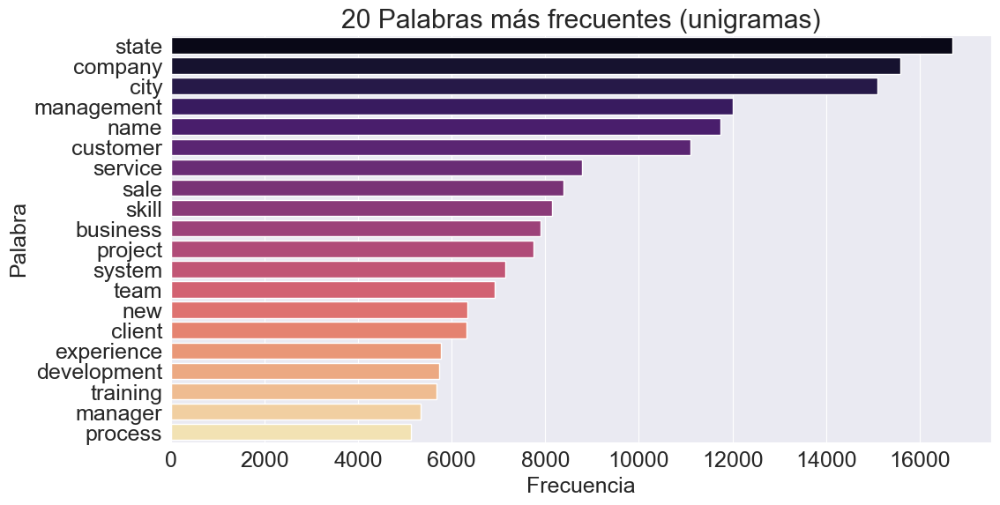
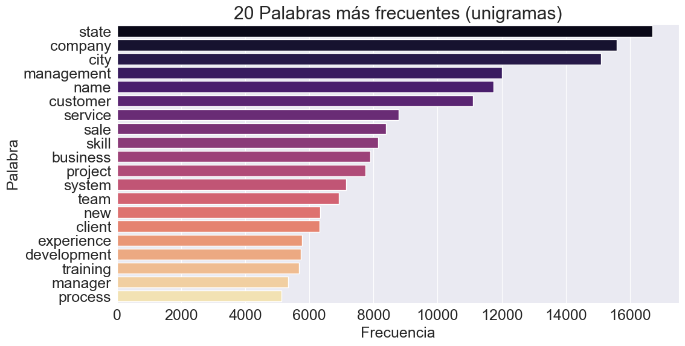
 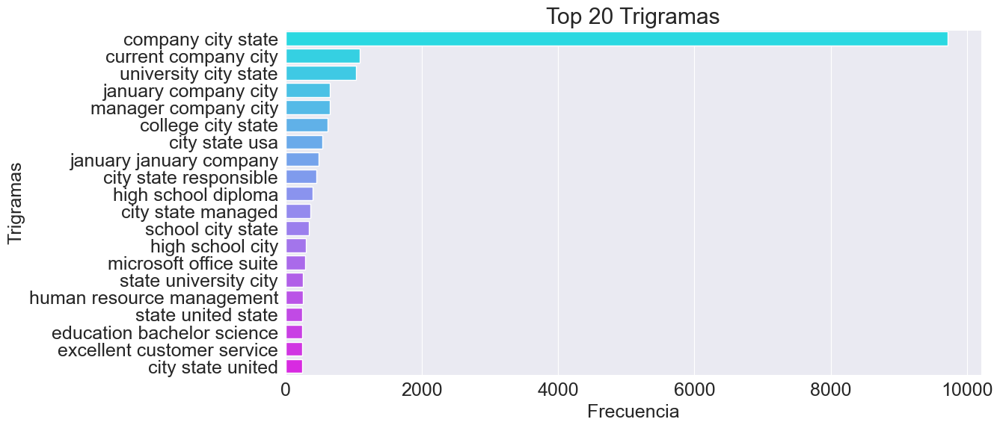
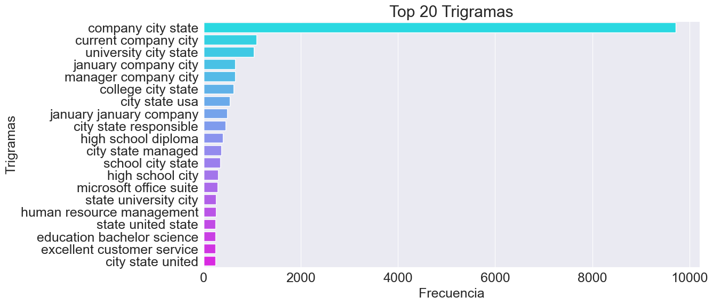

 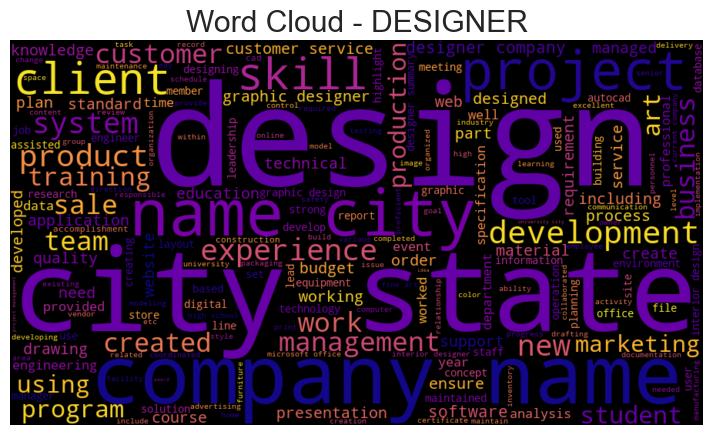
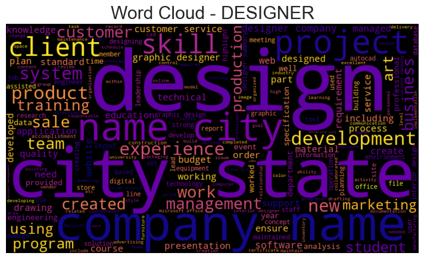
 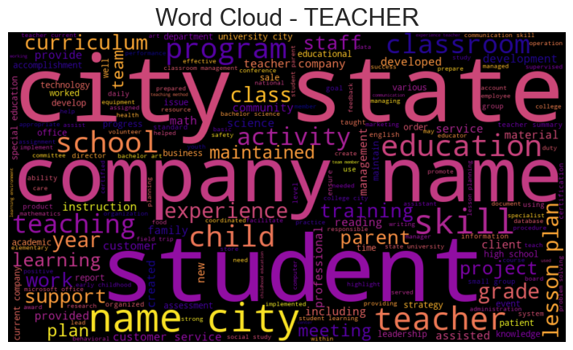
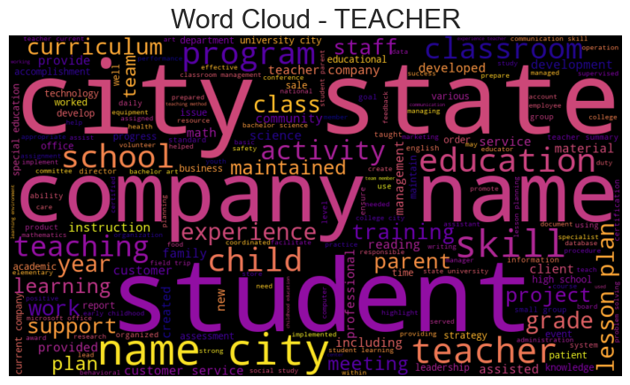


 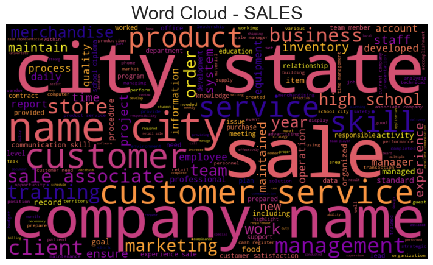
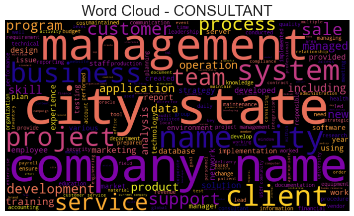
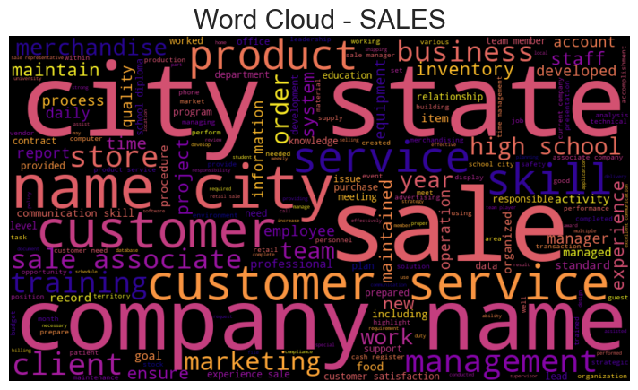
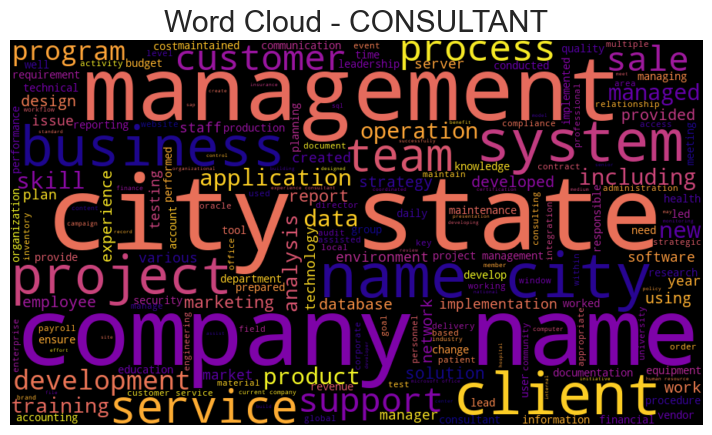


 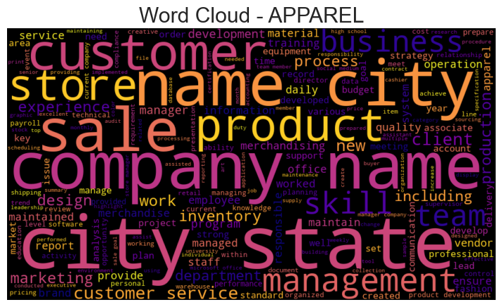
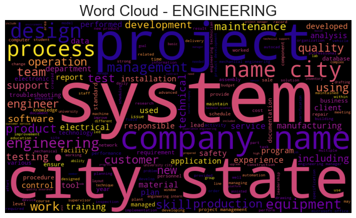
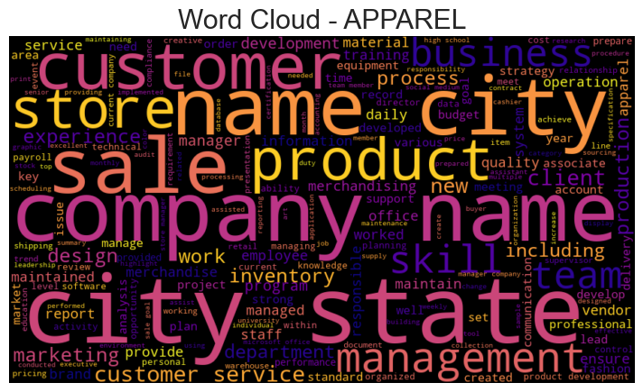
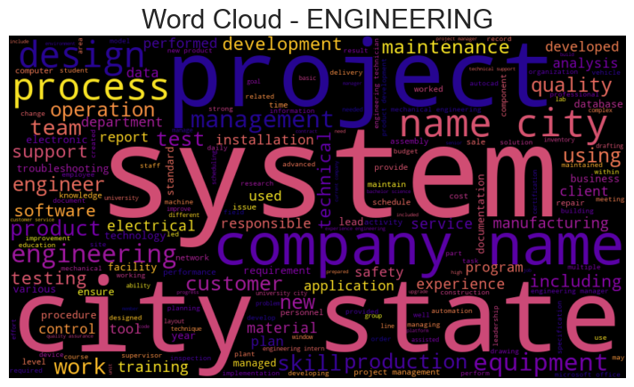

 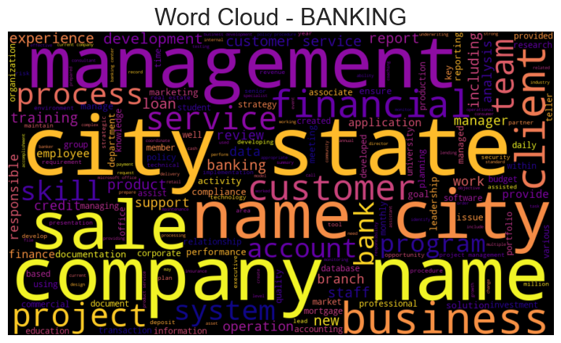
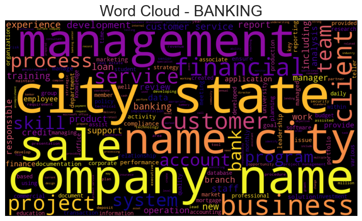


de estos graficso lo principal que podemos saber es que el las palabras “city” “state” y “company”, los bigramas “company city” y city state” y los el trigrama :company city state” se repiten significativamente mas que el resto, especialmente el anteriormente mencionado trigrama, esto nos dice que debe evaluarse su eliminacion para la reduccion de ruido en los tetos ya que es posible que no otorguen informacion de valor para la clasificacion.
otro aspecto a notar es que hay un alto desbalance de clases, por lo cual se debe asignar un sistema de pesos en los modelos para lidiar con esto.
# Ratio de desbalance
class_counts = data['Category'].value_counts()
imbalance_ratio = class_counts.max() / class_counts.min()
print(f" Ratio de desbalance: {imbalance_ratio:.2f}x")
# Tabla detallada
balance_df = pd.DataFrame({
'Category': class_counts.index,
'Count': class_counts.values,
'Percentage': (class_counts.values / len(data) * 100).round(2),
'Weight_Suggested': (len(data) / (len(class_counts) * class_counts.values)).round(3)
})
print(balance_df)
Ratio de desbalance: 5.45x
Category Count Percentage Weight_Suggested
0 INFORMATION-TECHNOLOGY 120 4.83 0.862
1 BUSINESS-DEVELOPMENT 120 4.83 0.862
2 FINANCE 118 4.75 0.877
3 ADVOCATE 118 4.75 0.877
4 ACCOUNTANT 118 4.75 0.877
5 ENGINEERING 118 4.75 0.877
6 CHEF 118 4.75 0.877
7 AVIATION 117 4.71 0.885
8 FITNESS 117 4.71 0.885
9 SALES 116 4.67 0.892
10 BANKING 115 4.63 0.900
11 HEALTHCARE 115 4.63 0.900
12 CONSULTANT 115 4.63 0.900
13 CONSTRUCTION 112 4.51 0.924
14 PUBLIC-RELATIONS 111 4.47 0.932
15 HR 110 4.43 0.941
16 DESIGNER 107 4.31 0.967
17 ARTS 103 4.15 1.005
18 TEACHER 102 4.11 1.015
19 APPAREL 97 3.90 1.067
20 DIGITAL-MEDIA 96 3.86 1.078
21 AGRICULTURE 63 2.54 1.643
22 AUTOMOBILE 36 1.45 2.875
23 BPO 22 0.89 4.705
al evaluar numericamente el desbalance vemos que la clase mayoritaria es 5.45 veces mayor que la minoritaria la cual cuenta con 22 observaciones, por lo cual incluso con los pesos va a ser dificil para los modelos el aprender sobre esta clase, por lo cual se debe evaluar el uso de Data augmentation.
from sklearn.feature_extraction.text import TfidfVectorizer
from sklearn.metrics.pairwise import cosine_similarity
# Representación TF-IDF por clase
class_texts = data.groupby('Category')['clean_text'].apply(lambda x: ' '.join(x))
tfidf = TfidfVectorizer(max_features=1000, ngram_range=(1,2))
class_vectors = tfidf.fit_transform(class_texts)
# Matriz de similaridad
similarity_matrix = cosine_similarity(class_vectors)
# Heatmap
plt.figure(figsize=(14,12))
sns.heatmap(similarity_matrix,
xticklabels=class_texts.index,
yticklabels=class_texts.index,
annot=True, fmt='.2f', cmap='RdYlGn_r', center=0.5,annot_kws={"size": 10})
plt.title("Similaridad Semántica entre Clases (TF-IDF)")
plt.xticks(rotation=45, ha='right')
plt.tight_layout()
plt.show()
pd.set_option('display.max_rows', None)
pd.set_option('display.max_columns', None)
pd.set_option('display.width', None)
pd.set_option('display.max_colwidth', None)
# Top clases confundibles
confusion_pairs = []
for i in range(len(similarity_matrix)):
for j in range(i+1, len(similarity_matrix)):
if similarity_matrix[i,j] > 0.80: # threshold
confusion_pairs.append({
'Class_1': class_texts.index[i],
'Class_2': class_texts.index[j],
'Similarity': similarity_matrix[i,j]
})
df_confusion = pd.DataFrame(confusion_pairs).sort_values('Similarity', ascending=False)
print(df_confusion)

Class_1 Class_2 Similarity
10 ADVOCATE HEALTHCARE 0.934635
4 ADVOCATE AUTOMOBILE 0.934255
35 APPAREL SALES 0.925204
52 BANKING CONSULTANT 0.916273
0 ACCOUNTANT FINANCE 0.911153
39 ARTS TEACHER 0.907188
59 BPO CONSULTANT 0.903334
13 AGRICULTURE ARTS 0.902010
26 APPAREL AUTOMOBILE 0.898300
50 BANKING BPO 0.894255
44 AUTOMOBILE CONSULTANT 0.892772
18 AGRICULTURE CONSULTANT 0.891546
2 ADVOCATE APPAREL 0.889981
1 ADVOCATE AGRICULTURE 0.889290
14 AGRICULTURE AUTOMOBILE 0.886494
9 ADVOCATE FITNESS 0.883693
41 AUTOMOBILE BANKING 0.883190
51 BANKING BUSINESS-DEVELOPMENT 0.881742
46 AUTOMOBILE HEALTHCARE 0.880362
68 CONSULTANT HEALTHCARE 0.879735
23 AGRICULTURE HEALTHCARE 0.878900
70 DIGITAL-MEDIA PUBLIC-RELATIONS 0.873990
69 CONSULTANT INFORMATION-TECHNOLOGY 0.871761
6 ADVOCATE BANKING 0.868497
11 ADVOCATE SALES 0.868437
29 APPAREL BUSINESS-DEVELOPMENT 0.866401
27 APPAREL BANKING 0.865627
47 AUTOMOBILE SALES 0.863535
54 BANKING FINANCE 0.862398
3 ADVOCATE ARTS 0.860493
8 ADVOCATE CONSULTANT 0.860409
64 CONSULTANT DIGITAL-MEDIA 0.859777
42 AUTOMOBILE BPO 0.857135
30 APPAREL CONSULTANT 0.856487
33 APPAREL FITNESS 0.856056
61 BUSINESS-DEVELOPMENT CONSULTANT 0.852539
12 AGRICULTURE APPAREL 0.851129
56 BANKING HEALTHCARE 0.850695
16 AGRICULTURE BANKING 0.850683
45 AUTOMOBILE FITNESS 0.847982
71 FITNESS HEALTHCARE 0.846160
63 BUSINESS-DEVELOPMENT SALES 0.844316
22 AGRICULTURE FITNESS 0.843561
65 CONSULTANT ENGINEERING 0.842046
34 APPAREL HEALTHCARE 0.841020
15 AGRICULTURE AVIATION 0.834983
40 AUTOMOBILE AVIATION 0.834331
31 APPAREL DESIGNER 0.834256
32 APPAREL DIGITAL-MEDIA 0.834215
60 BPO HEALTHCARE 0.833512
7 ADVOCATE BPO 0.831742
62 BUSINESS-DEVELOPMENT DIGITAL-MEDIA 0.830557
36 ARTS AUTOMOBILE 0.827675
37 ARTS FITNESS 0.827148
25 APPAREL ARTS 0.824905
72 FITNESS SALES 0.824552
66 CONSULTANT FINANCE 0.823789
48 AVIATION CONSULTANT 0.821766
38 ARTS HEALTHCARE 0.821005
49 AVIATION ENGINEERING 0.819915
55 BANKING FITNESS 0.815084
57 BANKING SALES 0.813224
53 BANKING DIGITAL-MEDIA 0.811693
19 AGRICULTURE DESIGNER 0.810300
17 AGRICULTURE BPO 0.809952
28 APPAREL BPO 0.808906
21 AGRICULTURE ENGINEERING 0.807113
24 AGRICULTURE TEACHER 0.806396
5 ADVOCATE AVIATION 0.804924
67 CONSULTANT FITNESS 0.803534
43 AUTOMOBILE BUSINESS-DEVELOPMENT 0.802721
58 BPO BUSINESS-DEVELOPMENT 0.802406
20 AGRICULTURE DIGITAL-MEDIA 0.801928
esta tabla nos muestra la similitud semantica calculada de la siguiente manera: y nos devuelve una lista de las que tienen una similiutd mayor a .80, esto puede ser util para ver los puntos en los cuales es mas probable la confusion de un modelo.
from sklearn.feature_extraction.text import TfidfVectorizer
def get_top_keywords_per_class(data, n_keywords=10):
"""Extrae keywords más discriminativas por clase usando TF-IDF"""
results = {}
for category in data['Category'].unique():
# Textos de esta clase vs resto
class_texts = data[data['Category'] == category]['clean_text']
other_texts = data[data['Category'] != category]['clean_text']
# TF-IDF
tfidf = TfidfVectorizer(max_features=500, ngram_range=(1,2))
tfidf.fit(pd.concat([class_texts, other_texts]))
# Vectores de esta clase
class_vector = tfidf.transform(class_texts).mean(axis=0).A1
# Top features
top_indices = class_vector.argsort()[-n_keywords:][::-1]
top_keywords = [(tfidf.get_feature_names_out()[i], class_vector[i])
for i in top_indices]
results[category] = top_keywords
return results
keywords_per_class = get_top_keywords_per_class(data, n_keywords=15)
# Visualizar para algunas clases
for category in ['INFORMATION-TECHNOLOGY', 'HEALTHCARE', 'BPO', 'AUTOMOBILE']:
print(f"\n🔑 Keywords distintivas para {category}:")
for word, score in keywords_per_class[category][:10]:
print(f" {word}: {score:.4f}")
🔑 Keywords distintivas para INFORMATION-TECHNOLOGY:
network: 0.1749
technology: 0.1641
system: 0.1641
information technology: 0.1507
server: 0.1421
information: 0.1170
support: 0.0959
management: 0.0923
security: 0.0917
software: 0.0899
🔑 Keywords distintivas para HEALTHCARE:
patient: 0.1913
healthcare: 0.1513
care: 0.1249
medical: 0.1178
health: 0.0912
state: 0.0897
customer: 0.0889
management: 0.0793
city: 0.0781
service: 0.0778
🔑 Keywords distintivas para BPO:
management: 0.1111
client: 0.1037
network: 0.0870
process: 0.0778
team: 0.0764
customer: 0.0760
business: 0.0697
company: 0.0676
call: 0.0673
sale: 0.0661
🔑 Keywords distintivas para AUTOMOBILE:
customer: 0.1469
claim: 0.1256
service: 0.1137
state: 0.1044
city: 0.0930
company: 0.0914
city state: 0.0900
customer service: 0.0750
name: 0.0749
company name: 0.0729
from collections import Counter
import numpy as np
import matplotlib.pyplot as plt
# Vocabulario
all_words = ' '.join(data['clean_text']).split()
word_freq = Counter(all_words)
freq_values = np.array(sorted(word_freq.values(), reverse=True))
# Rango (1, 2, 3...)
ranks = np.arange(1, len(freq_values)+1)
# Línea teórica de Zipf: C / r
C = freq_values[0]
zipf_line = C / ranks
# --- Gráfico ---
plt.figure(figsize=(12,6))
plt.loglog(ranks[:1000], freq_values[:1000], label='Frecuencia observada', linewidth=2)
plt.loglog(ranks[:1000], zipf_line[:1000], linestyle='--', label='Zipf teórico (1/r)')
plt.xlabel('Rank (log)')
plt.ylabel('Frecuencia (log)')
plt.title("Comparación con la Ley de Zipf")
plt.legend()
plt.grid(True, alpha=0.3)
plt.show()
# Palabras únicas por clase
vocab_per_class = {}
for cat in data['Category'].unique():
words = ' '.join(data[data['Category']==cat]['clean_text']).split()
vocab_per_class[cat] = len(set(words))
vocab_df = pd.DataFrame({
'Category': vocab_per_class.keys(),
'Unique_Words': vocab_per_class.values(),
'Samples': data['Category'].value_counts().values
})
vocab_df['Words_per_Sample'] = vocab_df['Unique_Words'] / vocab_df['Samples']
vocab_df = vocab_df.sort_values('Unique_Words', ascending=False)
plt.figure(figsize=(12,6))
sns.barplot(data=vocab_df, x='Category', y='Words_per_Sample', palette='coolwarm')
plt.xticks(rotation=90)
plt.title("Riqueza Léxica por Clase (Palabras únicas / muestra)")
plt.tight_layout()
plt.show()

La distribución empírica de frecuencias se aleja de la Ley de Zipf, mostrando una caída más lenta y una frecuencia excesiva de terminos recurrentes. Aunque en corpus de lenguaje natural libre esto sería una anomalia, en nuestro caso es un comportamiento esperado, dado que el dataset está compuesto por curriculums. ya que son textos altamente estructurados y repetitivos, reduce la diversidad lexica
tambien observamos en el segundo grafico que las clases ART, AVIATION y en menor medida BANKING, tienen una redundancia lexica menor, lo cual indica un lenguaje probablemente mas especializado.
# Boxplot de longitudes por clase
fig, axes = plt.subplots(1, 3, figsize=(20,6))
# Word count por clase
sns.boxplot(data=data, y='Category', x='Word_count', ax=axes[0], palette='Set2')
axes[0].set_title('Distribución de Word Count por Clase')
axes[0].set_xlabel('Número de Palabras')
# Length por clase
sns.boxplot(data=data, y='Category', x='Length', ax=axes[1], palette='Set3')
axes[1].set_title('Distribución de Longitud por Clase')
axes[1].set_xlabel('Caracteres')
# Mean word length
sns.boxplot(data=data, y='Category', x='mean_word_length', ax=axes[2], palette='Pastel1')
axes[2].set_title('Longitud Media de Palabras por Clase')
axes[2].set_xlabel('Promedio de Caracteres/Palabra')
plt.tight_layout()
plt.show()
# Estadísticas por clase
length_stats = data.groupby('Category').agg({
'Word_count': ['mean', 'std', 'min', 'max'],
'Length': ['mean', 'std'],
'mean_word_length': ['mean', 'std']
}).round(2)
print("\n📏 Estadísticas de Longitud por Clase:")
print(length_stats)
📏 Estadísticas de Longitud por Clase:
Word_count Length \
mean std min max mean std
Category
ACCOUNTANT 800.01 352.68 143 3459 6293.51 2561.74
ADVOCATE 848.50 372.08 266 2888 6575.16 2745.25
AGRICULTURE 856.29 325.57 192 1970 6605.29 2425.22
APPAREL 780.65 290.43 250 1735 6030.12 2178.67
ARTS 774.94 293.26 172 1507 6000.37 2253.85
AUTOMOBILE 808.19 454.00 213 2889 6321.25 3465.50
AVIATION 791.20 308.14 195 1829 6189.21 2342.80
BANKING 803.50 294.23 223 2101 6191.19 2151.36
BPO 974.23 395.39 420 2310 7317.68 2700.62
BUSINESS-DEVELOPMENT 775.02 266.35 0 1605 6043.98 2000.40
CHEF 797.01 508.74 149 5080 5995.54 3848.49
CONSTRUCTION 852.71 511.32 113 3994 6618.46 3806.70
CONSULTANT 879.70 344.24 194 2018 6844.35 2594.58
DESIGNER 734.97 382.63 131 2284 5647.23 2827.52
DIGITAL-MEDIA 792.24 424.78 237 3301 6094.73 3117.52
ENGINEERING 837.55 363.64 156 2579 6476.03 2754.62
FINANCE 811.76 291.08 256 2667 6316.16 2217.50
FITNESS 723.03 285.39 199 1797 5586.80 2150.21
HEALTHCARE 881.77 331.66 242 2749 6996.18 2578.03
HR 853.73 352.00 254 3119 6760.76 2741.48
INFORMATION-TECHNOLOGY 926.58 383.40 237 2670 7227.55 2813.58
PUBLIC-RELATIONS 889.32 519.77 253 5190 6913.43 3662.63
SALES 689.77 339.68 122 2486 5270.03 2524.17
TEACHER 715.28 337.47 183 2694 5562.80 2430.94
mean_word_length
mean std
Category
ACCOUNTANT 6.43 0.26
ADVOCATE 6.31 0.33
AGRICULTURE 6.28 0.28
APPAREL 6.21 0.27
ARTS 6.20 0.40
AUTOMOBILE 6.35 0.30
AVIATION 6.39 0.41
BANKING 6.31 0.35
BPO 6.16 0.33
BUSINESS-DEVELOPMENT 6.36 0.28
CHEF 6.01 0.44
CONSTRUCTION 6.30 0.39
CONSULTANT 6.38 0.33
DESIGNER 6.16 0.45
DIGITAL-MEDIA 6.26 0.31
ENGINEERING 6.33 0.34
FINANCE 6.33 0.36
FITNESS 6.23 0.39
HEALTHCARE 6.48 0.34
HR 6.49 0.26
INFORMATION-TECHNOLOGY 6.45 0.38
PUBLIC-RELATIONS 6.40 0.33
SALES 6.11 0.39
TEACHER 6.28 0.36
Conteo de Palabras (Word Count)
La mayoría de las categorías presentan distribuciones altamente sesgadas a la derecha con medianas bajas (entre 500 y 1000 palabras), lo que implica que la mayoría de los documentos son relativamente cortos, pero existen numerosos valores atípicos extremos (hasta ≈5000 palabras) que deben manejarse en el preprocesamiento para evitar sobrecargar modelos. HR y DESIGNER tienen medianas ligeramente más altas, indicando que sus documentos promedio tienden a ser los más extensos, mientras que ARTS y AVIATION tienen las medianas más bajas.
Longitud por Clase (Caracteres)
Esta distribución es altamente correlacionada con el conteo de palabras, manteniendo el sesgo a la derecha y los valores atípicos (hasta ≈25000 caracteres). Las categorías con documentos más largos en palabras, como INFORMATION-TECHNOLOGY y HR, confirman ser las más extensas en caracteres, lo que refuerza la necesidad de técnicas como la truncación o el padding para estandarizar la entrada de datos en modelos secuenciales de PLN.
Longitud Media de Palabras (Promedio de Caracteres/Palabra)
Las distribuciones aquí son las más compactas, indicando consistencia en la longitud de las palabras dentro de cada clase. Las categorías como AVIATION, BANKING y ENGINEERING tienen las medianas más altas (cerca o por encima de 6.5 caracteres), lo que sugiere un lenguaje técnico con palabras más largas o compuestas; en contraste, clases como HR y CHEF tienen palabras promedio más cortas, sugiriendo un lenguaje menos formal o especializado
def calculate_ttr(text):
"""Type-Token Ratio: unique words / total words"""
words = text.split()
if len(words) == 0:
return 0
return len(set(words)) / len(words)
data['ttr'] = data['clean_text'].apply(calculate_ttr)
# TTR por clase
ttr_by_class = data.groupby('Category')['ttr'].agg(['mean', 'std']).sort_values('mean', ascending=False)
plt.figure(figsize=(12,6))
ttr_by_class['mean'].plot(kind='barh', xerr=ttr_by_class['std'], color='teal', alpha=0.7)
plt.xlabel('Type-Token Ratio (promedio)')
plt.title('Diversidad Léxica por Clase')
plt.tight_layout()
plt.show()
print("\n📚 Clases con mayor diversidad léxica (vocabulario más rico):")
print(ttr_by_class.head(5))
📚 Clases con mayor diversidad léxica (vocabulario más rico):
mean std
Category
SALES 0.583166 0.100178
FITNESS 0.581124 0.087771
AVIATION 0.561496 0.087516
CHEF 0.560125 0.107681
ARTS 0.559398 0.092854
La gráfica de barras horizontal presenta la Diversidad Léxica por Clase, medida por el Type-Token Ratio (TTR) promedio, que es la proporción de palabras únicas (types) sobre el total de palabras (tokens) en el corpus de cada categoría. Las categorías se agrupan en un rango relativamente estrecho (aproximadamente 0.5 a 0.65), indicando que la diversidad general de vocabulario no varía drásticamente entre las clases. Observamos que dominios como INFORMATION-TECHNOLOGY y CONSULTANT presentan el TTR más alto, lo que sugiere un lenguaje con la menor redundancia y mayor variedad de vocabulario. En contraste, categorías como FITNESS y SALES tienen el TTR más bajo, indicando que sus textos utilizan un conjunto de vocabulario más limitado y repetitivo (mayor redundancia léxica)
# Palabras que aparecen en solo 1 clase
word_class_presence = {}
for word in set(all_words):
classes_with_word = data[data['clean_text'].str.contains(word, regex=False)]['Category'].unique()
word_class_presence[word] = len(classes_with_word)
unique_words_per_class = {w: c for w, c in word_class_presence.items() if c == 1}
print(f"\n🔬 Palabras únicas a una sola clase: {len(unique_words_per_class):,}")
print(f" Porcentaje del vocabulario: {len(unique_words_per_class)/vocab_size*100:.2f}%")
# Ejemplos de palabras únicas por clase
for category in data['Category'].unique()[:24]:
cat_texts = ' '.join(data[data['Category']==category]['clean_text'])
cat_words = set(cat_texts.split())
# Palabras que solo aparecen en esta clase
unique_to_class = [w for w in cat_words if word_class_presence.get(w, 0) == 1]
print(f"\n{category}: {len(unique_to_class)} palabras únicas")
print(f" Ejemplos: {', '.join(sorted(unique_to_class)[:10])}")
🔬 Palabras únicas a una sola clase: 24,634
Porcentaje del vocabulario: 54.28%
HR: 889 palabras únicas
Ejemplos: abraattained, accidentsincidents, accountingpayment, accountsbadging, accross, accruepartners, accused, achievementrecognition, actionscreated, actions
DESIGNER: 1155 palabras únicas
Ejemplos: aafet, abbandoned, abbvie, abercrombie, abode, abrasive, accutrac, acquisitor, adhesion, adler
INFORMATION-TECHNOLOGY: 1393 palabras únicas
Ejemplos: aand, abitility, aboutcom, abuja, academicsbusiness, accesspassword, accessspam, accessusage, accorded, accountmate
TEACHER: 860 palabras únicas
Ejemplos: aasece, abierto, abilityagility, acclimated, accountabilityearned, activitiescarefully, activitiescompleted, activitiescreated, activitiesencouraged, activitiesincorporated
ADVOCATE: 1047 palabras únicas
Ejemplos: aacn, abhivyakti, ablls, abns, absorbing, académicos, accidentillness, accountscustomer, achieveexceed, aclaims
BUSINESS-DEVELOPMENT: 1056 palabras únicas
Ejemplos: aarpfannie, abpros, accountsidentified, accountsthe, accountterritory, accredidation, accuweathercom, achievementdriven, activepassive, activityresults
HEALTHCARE: 1132 palabras únicas
Ejemplos: aacsb, abda, ablewiring, abuseaddiction, accn, accountingcpa, accountingeconomics, accountingprofit, accreditaion, acheivement
FITNESS: 897 palabras únicas
Ejemplos: aaahc, abdelmalek, abdominalscore, abim, abssports, academywest, accountantresource, accountmanagement, accucheck, acromegaly
AGRICULTURE: 1035 palabras únicas
Ejemplos: abeokuta, abiola, accountantsenior, acetylcholinesterase, acidulated, acreage, actinopyaga, actinopyge, actiondriven, activitiesevents
BPO: 266 palabras únicas
Ejemplos: abhana, accounttl, adaptors, adchnp, additionstransfers, adminclient, aestheticallypleasing, agentgroup, agentssales, ahcss
SALES: 758 palabras únicas
Ejemplos: abigail, abington, ablation, accociate, accommplishments, accordinglyrepaired, accuratelycommitted, acrobatreader, activates, adeptness
CONSULTANT: 1293 palabras únicas
Ejemplos: aade, aaham, aatcc, abap, abcopa, aborted, abstinence, abusing, acbs, accelio
DIGITAL-MEDIA: 1165 palabras únicas
Ejemplos: aaslf, abccom, abcnewscom, abekas, ableton, accelerates, accucom, aclus, acton, adcenter
AUTOMOBILE: 386 palabras únicas
Ejemplos: aaacom, accountsexamined, accountsrecorded, accurateanswered, activitiesplans, adaboost, addremoving, adjustersettle, adress, adservice
CHEF: 1042 palabras únicas
Ejemplos: aapc, acadiana, accelerant, accountabilityinventory, accountingupdated, accountsevaluated, accuratelyadaptable, achievementsorganizations, achievement”, additionalinfo
FINANCE: 934 palabras únicas
Ejemplos: aagi, abauntil, aboveaverage, abovementioned, accountabilitycoordinated, accountantamerican, accountingauditing, accountingcomputer, accountinghrpayroll, accrualpayment
APPAREL: 930 palabras únicas
Ejemplos: abiezer, acclimation, accountingadministrative, accountspayable, accounts’, accuglide, accuracypriced, actualcompleted, administrativereceptionist, administratorhr
ENGINEERING: 1598 palabras únicas
Ejemplos: aalto, aardwolf, abaqus, abduction, abnormalitiesoperated, abradable, abrams, absorbs, accelerometer, accommodationsrental
ACCOUNTANT: 756 palabras únicas
Ejemplos: abby, abklm, aboulela, abraxas, abstracting, accountacy, accountancyal, accountantanalyst, accountantfinancial, accountantgeneral
CONSTRUCTION: 1493 palabras únicas
Ejemplos: aadt, aashto, aashtos, aashtosteel, aattraction, abajo, abutment, accomplishmemts, accountantassistant, acerca
PUBLIC-RELATIONS: 1419 palabras únicas
Ejemplos: aakash, abusedrug, accentuated, accordsqa, accountbased, accountscontacts, accurev, accurevs, activitiesevaluated, actorcomedian
BANKING: 956 palabras únicas
Ejemplos: aaditya, abendaid, abends, abry, accessmicrosoft, accountingjackson, accountsdelivered, accretiondilution, accuity, activityfunction
ARTS: 1031 palabras únicas
Ejemplos: abbreviation, abgnac, aboriginal, abydos, academicallyintellectually, accidentally, accompanist, accountsclosure, accra, accrualsmanaged
AVIATION: 1143 palabras únicas
Ejemplos: aaae, aasf, aasfs, abundance, accidentfree, acetal, acetate, activevoice, adminaz, administrativemanagement
import pandas as pd
import numpy as np
import matplotlib.pyplot as plt
import seaborn as sns
import re
import string
from nltk.corpus import stopwords
from nltk.stem import WordNetLemmatizer
from nltk import tokenize
from sklearn.feature_extraction.text import TfidfVectorizer
from sklearn.metrics.pairwise import cosine_similarity
from sklearn.decomposition import PCA
import umap
from sentence_transformers import SentenceTransformer
from sklearn.metrics.pairwise import cosine_similarity
from transformers import AutoTokenizer
# 2.1 duplicados exactos
df["duplicated_exact"] = df["Resume_str"].duplicated()
print("\nDuplicados exactos:", df["duplicated_exact"].sum())
# 2.3 textos vacíos o casi vacíos
df["char_len"] = df["Resume_str"].str.len()
print("\nTextos con < 30 caracteres:", (df["char_len"] < 30).sum())
for c in df["Category"].unique()[:5]:
print("\nKeywords para clase:", c)
print(get_top_keywords(df, c))
X = tfidf.transform(df["clean_text"])
pca = PCA(n_components=2).fit_transform(X.toarray()[:3000])
plt.scatter(pca[:,0], pca[:,1], c=pd.factorize(df["Category"])[0][:3000], s=3)
plt.title("PCA TF-IDF")
plt.show()
um = umap.UMAP(n_neighbors=20, min_dist=0.1).fit_transform(X[:3000])
plt.scatter(um[:,0], um[:,1], c=pd.factorize(df["Category"])[0][:3000], s=3)
plt.title("UMAP TF-IDF")
plt.show()
model = SentenceTransformer("all-MiniLM-L6-v2")
emb = model.encode(df["Resume_str"], show_progress_bar=True)
sim2 = cosine_similarity(emb)
np.fill_diagonal(sim2, 0)
df["semantic_duplicate"] = (sim2.max(axis=1) > 0.9).astype(int)
print("Duplicados semánticos:", df.semantic_duplicate.sum())
tokenizer = AutoTokenizer.from_pretrained("distilbert-base-uncased")
def count_tokens(text):
return len(tokenizer.encode(text, truncation=False))
df["token_count"] = df["Resume_str"].apply(count_tokens)
plt.figure(figsize=(12,5))
sns.histplot(df["token_count"], bins=50, kde=True)
plt.title("Distribución de tokens con DistilBERT")
plt.show()
print("\n% textos > 512 tokens:", (df["token_count"] > 512).mean())
print("% textos > 256 tokens:", (df["token_count"] > 256).mean())
print("% textos > 128 tokens:", (df["token_count"] > 128).mean())
print("\n========= Resumen General =========")
print("Duplicados exactos:", df["duplicated_exact"].sum())
print("Duplicados casi idénticos:", df["near_duplicates"].sum())
print("Duplicados semánticos:", df["semantic_duplicate"].sum())
print("\nTextos muy cortos (<30 chars):", (df["char_len"] < 30).sum())
print("Textos >512 tokens:", (df["token_count"] > 512).mean())
print("Clases:", df["Category"].nunique())
print("Desbalance:", class_counts.max()/class_counts.min())
Duplicados exactos: 2
Textos con < 30 caracteres: 1
Keywords para clase: HR
[('employee', 0.17462938325854402), ('human resource', 0.12462859028278338), ('human', 0.1160429070655204), ('benefit', 0.09659472920797381), ('resource', 0.09519897032882864), ('management', 0.08378896713234767), ('recruitment', 0.07334207917862769), ('payroll', 0.07111674522666968), ('company', 0.061270821438157666), ('state', 0.05768664357518407)]
Keywords para clase: DESIGNER
[('design', 0.17287760214675257), ('designer', 0.16702892940062616), ('graphic', 0.0884310253904727), ('state', 0.06504774313781014), ('city', 0.06386388220834788), ('city state', 0.05989628731560472), ('interior', 0.059031296585078524), ('company', 0.05487345331264046), ('graphic designer', 0.05387294344963408), ('project', 0.05012547187367286)]
Keywords para clase: INFORMATION-TECHNOLOGY
[('network', 0.12315273820304892), ('system', 0.11645322066386463), ('technology', 0.11611403302192778), ('information technology', 0.10674212089747818), ('server', 0.10207041788680105), ('information', 0.0818736400489378), ('support', 0.06850945380496769), ('hardware', 0.0671873863739721), ('software', 0.06695983570026048), ('management', 0.06551348579094368)]
Keywords para clase: TEACHER
[('student', 0.21308849432366028), ('teacher', 0.21011272349570181), ('child', 0.11633581846940368), ('classroom', 0.0949479562980947), ('lesson', 0.08623875136419004), ('learning', 0.07695246059801054), ('state', 0.0740595487756603), ('parent', 0.07235996294920122), ('teaching', 0.06609195467907297), ('city', 0.06482585547310611)]
Keywords para clase: ADVOCATE
[('customer', 0.09860565158625234), ('patient', 0.08536926874323669), ('advocate', 0.07684826293524423), ('service', 0.07328019379488775), ('state', 0.07265972095536856), ('city', 0.06378693883983488), ('city state', 0.06267091552112458), ('child', 0.057651722675043024), ('client', 0.05506291029585484), ('company', 0.054947919114874386)]


Batches: 100%|██████████| 78/78 [01:18<00:00, 1.01s/it]
Duplicados semánticos: 33
Token indices sequence length is longer than the specified maximum sequence length for this model (835 > 512). Running this sequence through the model will result in indexing errors

% textos > 512 tokens: 0.8989533011272142
% textos > 256 tokens: 0.9895330112721417
% textos > 128 tokens: 0.999597423510467
========= Resumen General =========
Duplicados exactos: 2
Duplicados casi idénticos: 29
Duplicados semánticos: 33
Textos muy cortos (<30 chars): 1
Textos >512 tokens: 0.8989533011272142
Clases: 24
Desbalance: 5.454545454545454
Análisis de Reduccion de Dimensionalidad Las visualizaciones de PCA y UMAP, aplicadas a la representación TF-IDF de los documentos, evalúan la capacidad de los features léxicos para separar las categorías. La gráfica PCA TF-IDF muestra los documentos fuertemente mezclados en una gran nube sin clusters evidentes. Esto indica que las diferencias en la importancia de las palabras (TF-IDF) entre clases no son suficientes para una separación lineal. Aunque UMAP (una técnica no lineal) logra identificar algunas agrupaciones locales más densas en los extremos, la mayor parte de las categorías permanecen intercaladas en la nube central. En conjunto, estos gráficos sugieren que la información léxica de superficie (TF-IDF) es insuficiente para distinguir claramente las clases, y un modelo de clasificación tendrá dificultades basándose únicamente en esta representación.
Informacion general de calidad de los textos El corpus de 24 clases contiene 2 duplicados exactos y 1 texto extremadamente corto (menos de 30 caracteres), lo cual indica la presencia de ruido y una necesidad inmediata de limpieza para prevenir el sesgo del modelo. Además, se observa una alta redundancia de contenido, manifestada en 29 duplicados casi idénticos y 33 duplicados semánticos, lo que requiere una gestión de la superposición de contenido. Un aspecto favorable es que solo el 0.89% de los documentos excede el límite de 512 tokens, lo que implica que la gran mayoría del corpus se ajusta a los límites de longitud de los modelos Transformer, esto nos dice ademas que se debe implementar un sistema de chunking de los textos para evitar la perdida de informacion, tanto en en el data augmentation como en la aplicacion de los modelos.
Resumen general#
El análisis exploratorio revela:
Presencia de términos altamente frecuentes y posiblemente no informativos (e.g., ‘company city state’).
Desbalance significativo entre clases, con una proporción máxima de 5.45:1.
Alta similitud semántica entre ciertos pares de categorías, lo que anticipa posibles confusiones en la clasificación.
Distribución de longitudes de texto heterogénea, con outliers que requieren manejo (truncamiento/padding).
Baja separabilidad en representaciones léxicas (TF-IDF), sugiriendo la necesidad de embeddings contextuales.